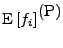

The first class of population residuals are calculated by evaluating the preceding approximations at the mean values for the individuals' vectors of random effects parameters, i.e., by setting for all of the individuals. This corresponds to the approximations made for the First Order (FO) objective function, i.e.
The following table lists the residual related population outputs, their values as calculated by SPK, and their values as calculated by NONMEM. Eq. 16 applied to Eq. 29 provides the PPRED entry in the table below. The rest of the entries follow similarly.
| Quantity | SPK Value | Description | Name | NONMEM Value |
|  | Approximate predicted value for an individual's data. | PPRED | PRED | |
|
|
|
Approximate residuals for an individual. | PRES | RES |
|
|
![$\begin{array}{l}
\left\{ \partial_b f_i(\alpha, 0) \;
D(\alpha) \; \partial_b...
...^{-1/2} \\
\mbox{\hspace{0.5in}}
\ast [ y_i - f_i(\alpha, 0) ]
\end{array} $](img84.png)
|
Approximate weighted residuals for an individual. | PWRES | WRES |
|
|
Individual parameter residuals for an individual. | PETARES | Not available in NONMEM. | |
|
|
Weighted individual parameter residuals for an individual. | PWETARES | Not available in NONMEM. |
The following table lists the residual related quantities, their values as calculated by SPK, and their values as calculated by NONMEM for the case variables without P, I or L prefix. These quantities are supposed to be compatible with NONMEM outputs. In this case, the NONMEM values are the same as above.
| Quantity | SPK Value | Description | Name | NONMEM Value |
|
|
Approximate predicted value for an individual's data. | PRED | PRED | |
|
|
|
Approximate residuals for an individual. | RES | RES |
|
|
Approximate weighted residuals for an individual. | WRES | WRES | |
|
|
Individual parameter residuals for an individual. | ETARES | Not available in NONMEM. | |
| Weighted individual parameter residuals for an individual. | WETARES | Not available in NONMEM. |
The following table lists the residual related linearized outputs, their
values as calculated by SPK, and their values as calculated by NONMEM.
In this case, the NONMEM values are not available.
Eq. 17 applied to Eq. 29 provides the LPRED entry in the table
below. The rest of the entries follow similarly.
Note that the estimate of the individual random
effects is done for each individual and is the estimate
that arises from the linearization of the model around zero (not from
POSTHOC). In other words, it is the maximum likelihood estimate of the
random effects conditional on the model  being linear and
conditional on
being linear and
conditional on  values. It
can be obtained via the solution to a linear least squares problem.
The formula for the linear least squares problem is:
values. It
can be obtained via the solution to a linear least squares problem.
The formula for the linear least squares problem is:
| (30) |
| (31) |
The linear model is shown below as part of the definition of .
| Quantity | SPK Value | Description | Name | NONMEM Value |
|
|
Approximate predicted value for an individual's data. | LPRED | Not available in NONMEM. | |
|
|
Approximate residuals for an individual. | LRES | Not available in NONMEM. | |
|
|
Approximate weighted residuals for an individual. | LWRES | Not available in NONMEM. | |
| Individual parameter residuals for an individual. | LETARES | Not available in NONMEM. | ||
| Weighted individual parameter residuals for an individual. | LWETARES | Not available in NONMEM. |
The following table lists the residual related individual outputs, their values as calculated by SPK, and their values as calculated by NONMEM. In this case, the NONMEM values would be calculated using the First Order (FO) Method in the $ESTIMATION command with the POSTHOC option. Eq. 18 applied to Eq. 29 provides the IPRED entry in the table below. The rest of the entries follow similarly. Note that the estimate of the individual random effects is obtained for each individual and is the MAP Bayesian estimate.
| Quantity | SPK Value | Description | Name | NONMEM Value |
| Predicted value for an individual's data. | IPRED | Not available in NONMEM. | ||
|
|
Residuals for an individual. | IRES | Not available in NONMEM. | |
| Weighted residuals for an individual. | IWRES | Not available in NONMEM. | ||
| Individual parameter residuals. | IETARES | Not available in NONMEM. | ||
| Weighted individual parameter residuals. | IWETARES | Not available in NONMEM. |